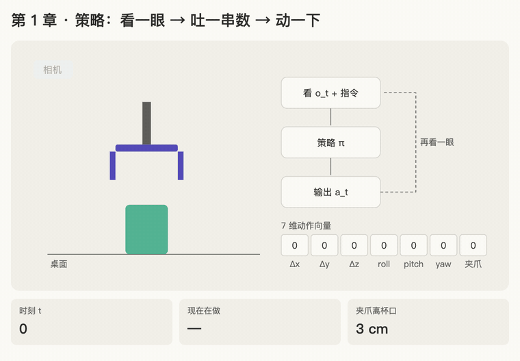

第 1 章 · 机器人策略是什么
本章回答：VLA 到底输入什么、输出什么？"动作"在模型眼里长什么样？
讲解日期：2026-10-27 · 上一章：— · 下一章：第 2 章 行为克隆
本章缩写：VLA = Vision-Language-Action（视觉 / 语言 / 动作）；RT = Robotics Transformer（机器人 / Transformer）；OpenVLA = 开源 VLA；ACT = Action Chunking with Transformers（动作分块 + Transformer）；Hz = hertz（每秒几次）。全表见 appendix-glossary.md
讲解
白话类比：开车的你
你开车时每一瞬间都在做同一件事：
- 看：眼睛看到前方路况（图像）；
- 听：导航说"前方 200 米右转"（指令）；
- 做：手把方向盘转多少度、脚踩油门多深（几个数字）。
然后下一瞬间又看、又听、又做，一秒钟重复很多次。
机器人也是这样。把"看 + 听 → 做"这个规则叫作策略（policy）。VLA 就是用一个大模型来当这个策略：
| 字母 | 英文 | 机器人里是什么 |
|---|---|---|
| V | Vision | 一到三个相机拍的图 |
| L | Language | 一句指令，比如"把毛巾叠好" |
| A | Action | 一串数字，告诉手臂怎么动 |
动作就是一个向量
回忆 transformer-deep-dive 第 1 章：向量就是"一串数字描述一个东西，每个位置含义固定"。动作也是向量。OpenVLA 用的单臂机器人，每个动作是 7 个数：
| 位置 | 含义 |
|---|---|
| 1–3 | 手往 前后 / 左右 / 上下 挪多少（Δx, Δy, Δz） |
| 4–6 | 手腕绕三个轴转多少（Δroll, Δpitch, Δyaw） |
| 7 | 夹爪：张开还是合上 |
例：[0.02, 0, -0.01, 0, 0, 0, 1] = 往前挪 2 厘米、往下挪 1 厘米、不转、夹爪合上。
和普通聊天模型的区别
聊天模型输入图和字，输出字。VLA 输入图和字，输出动作数字，而且：
- 要反复输出：一秒钟 3 次（RT-1）到 50 次（π0）；
- 输出会改变世界：手动了，下一张图就不一样了。这一点后面讲"复合误差"时很重要。
公式
- \(t\)：第几个时刻（下标，和 \(a_i\) 一样的写法）
- \(o_t\)：时刻 \(t\) 的观测（observation），即相机图像，通常还加上机器人自己的关节读数
- \(\ell\)：语言指令（整个任务不变，所以没有下标 \(t\)）
- \(\pi\)：策略（policy），就是模型本身
- \(a_t\)：时刻 \(t\) 输出的动作向量
动画演示：策略循环：看 → 想 → 做

可交互版：animations/01-policy-loop.html（用浏览器打开，可播放、单步、换随机数重来）。
怎么看：
- 右边三个框依次亮起：看（相机画面 + 指令）→ 想（策略 π）→ 做（输出 7 维动作），然后虚线回到"再看一眼"，这就是一个时刻。
- 下面 7 个格子是动作向量：前 3 步只有 Δz = −0.01 亮（往下 1 厘米），第 4 步只有夹爪 = 1 亮（合上），第 5 步 Δz = +0.01 和夹爪 = 1 同时亮（夹着杯子往上）。大部分位置是 0。
- 手臂每次只走一小步，走完马上重新看。这就是第 1 题"4 个时刻"的过程。
练习与作答记录
题：机器人收到指令"把杯子放进碗里"。夹爪正在杯子正上方 3 厘米、张开着。下一步它应该输出什么样的 7 维动作？用上面的表写出来（数字大概就行），并说一下每个非零的数是什么意思。
作答（2026-10-27，原话）：手向下移动3cm，张开夹爪，合上夹爪
点评：半对。
- ✅ 方向对：要往下（Δz 为负），距离 3 厘米也对；先下去、再合上的顺序也对。
- ❌ 一个动作向量只描述一个时刻。答案里其实是三步，塞进了一次输出。正确写法是分成两个时刻：
- 这一步：[0, 0, -0.03, 0, 0, 0, 0]：只往下 3 厘米，夹爪保持张开（0 = 张开，1 = 合上）
- 下一步：[0, 0, 0, 0, 0, 0, 1]：不动，合上夹爪
- ⚠️ "张开夹爪"多余：夹爪本来就开着，第 7 位保持 0 即可。
- 💡 一口气规划好"先下再合"这几步，正是第 3 章"动作分块（action chunk）"的思路：ACT、π0 都是一次输出一整段动作。
追问（检查是否理解）：真实机器人一秒要输出 10–50 次动作，每次只走一小段。如果一次只能往下 1 厘米，夹到杯子总共需要几个时刻？把每个时刻的 7 维向量写出来。
追问作答（2026-10-27）："懂了"，跳过书面作答。参考答案：4 个时刻，前 3 个各往下 1 厘米 [0, 0, -0.01, 0, 0, 0, 0]，第 4 个原地合上夹爪 [0, 0, 0, 0, 0, 0, 1]。
重做（2026-11-04，原话）：3，-0.03，4，0，5，0，6，0，7，0，7，1 ✓
点评：全对。用"位置，数值"的写法，等于写出了两个时刻：
- 时刻 1：[0, 0, -0.03, 0, 0, 0, 0]：第 3 位 -0.03（往下 3 厘米），第 4–6 位不转，第 7 位 0（夹爪保持张开）
- 时刻 2：第 7 位变成 1，合上夹爪
上次的两个问题都改过来了：没有多余的"张开夹爪"，"下去"和"合上"也分到了两个时刻。
口诀
看一眼，听一句，吐一串数；一秒吐很多次，吐完世界就变了。
本章复习卡片
V01 VLA 的输入与输出、V02 一个动作向量 = 一个时刻（见 review.md）